第 9 章 树回归#
本章解决：第 8 章的线性回归用一个全局模型拟合所有样本，可数据一旦特征繁多、关系复杂或干脆非线性，全局模型就力不从心。本章的思路是把数据集二元切分成若干份易建模的子集，再对每份局部建模——这就是 CART（Classification And Regression Trees，分类回归树）算法：叶节点放常数得到回归树，放线性方程得到模型树；配套的预剪枝与后剪枝用来抑制过拟合。最后用测试集上的 \(R^2\) 把树回归与标准线性回归拉出来比一比，再用 Tkinter 搭一个 GUI 让参数调节变成"拖一下就知道"。
| 关键词 | 事实 |
|---|---|
| 算法 | CART：既可用于分类又可用于回归的树构建算法 |
| 两种树 | 回归树（叶 = 常数）／模型树（叶 = 线性方程） |
| 优点 | 可以对复杂和非线性的数据建模 |
| 缺点 | 结果不易理解（连续切分的树比一条方程难读） |
| 适用数据类型 | 数值型和标称型数据（标称型须映射成二值型） |
| 防过拟合 | 预剪枝（构建中提前终止，需参数）＋ 后剪枝（测试集合并叶，无须参数） |
| 评价指标 | 测试集上的 \(R^2\) 值（corrcoef 相关系数） |
树回归的一般方法六步，本章按这条链走：
运行环境
本章代码从 tab 分隔的文本文件读数据，工作目录需在数据所在目录（本笔记为 E:\Desktop\深度学习\_ml_data\Ch09\，含 ex00.txt、ex0.txt、ex2.txt、ex2test.txt、exp2.txt、bikeSpeedVsIq_train.txt、bikeSpeedVsIq_test.txt）。拿不准时先 print(os.getcwd())。运行环境为 Python 3 + NumPy 2.x（machinelearn 环境）；原书是 Python 2，差异处均已在代码注释和 !!! warning 中标明。所有关键数值均已实跑复现。
9.0 本章导图#
9.1 复杂数据的局部性建模#
第 8 章介绍的线性回归包含一些强大的方法，但这些方法创建的模型需要拟合所有的样本点（局部加权线性回归除外）。当数据拥有众多特征并且特征之间关系十分复杂时，构建全局模型的想法就显得太难、也略显笨拙；而且实际生活中很多问题都是非线性的，不可能用全局线性模型拟合任何数据。
一种可行的方法是：将数据集切分成很多份易建模的数据，然后利用第 8 章的线性回归技术来建模。如果首次切分后仍然难以拟合线性模型，就继续切分。在这种切分方式下，树结构和回归法就相当有用。
本章首先介绍一个新算法——CART（Classification And Regression Trees，分类回归树）。该算法既可以用于分类还可以用于回归，非常值得学习。然后利用 Python 构建并显示 CART 树，代码保持足够的灵活性以便用于多个问题。接着用 CART 构建回归树并介绍树剪枝技术（主要目的是防止过拟合）；之后引入更高级的模型树算法——与回归树在每个叶节点上用均值做预测不同，模型树在每个叶节点上构建一个线性模型。树的构建算法中有一些需要调整的参数，所以还会用 Python 的 Tkinter 模块建立图形交互界面，在该界面的辅助下分析参数对回归效果的影响。
与第 3 章的关系：决策树不断将数据切分成小数据集，直到所有目标变量完全相同或数据不能再切分为止。决策树是一种贪心算法——它要在给定时间内做出最佳选择，但并不关心能否达到全局最优。第 3 章用的是 ID3，本章换成 CART，树回归的一般方法如下：
| 步骤 | 做法 |
|---|---|
| (1) 收集数据 | 采用任意方法收集数据 |
| (2) 准备数据 | 需要数值型数据，标称型数据应该映射成二值型数据 |
| (3) 分析数据 | 绘出数据的二维可视化显示结果，以字典方式生成树 |
| (4) 训练算法 | 大部分时间都花费在叶节点树模型的构建上 |
| (5) 测试算法 | 使用测试数据上的 \(R^2\) 值来分析模型的效果 |
| (6) 使用算法 | 使用训练出的树做预测，预测结果还可以用来做很多事情 |
9.2 连续和离散型特征的树的构建#
ID3 的两个问题。 第 3 章的树构建算法是 ID3：每次选取当前最佳的特征来分割数据，并按照该特征的所有可能取值来切分——一个特征有 4 种取值，数据就被切成 4 份。一旦按某特征切分后，该特征在之后的算法执行过程中将不会再起作用，所以有观点认为这种切分方式过于迅速。另一个问题是 ID3 不能直接处理连续型特征：只有事先将连续型特征转换成离散型才能使用，而这种转换会破坏连续型变量的内在性质。
二元切分法。 另一种方法是每次把数据集切成两份：如果数据的某特征值等于切分所要求的值，这些数据就进入左子树，反之进入右子树。二元切分法易于对树构建过程进行调整以处理连续型特征——具体做法是：如果特征值大于给定值就走左子树，否则走右子树。另外二元切分法也节省了树的构建时间，但这点意义不大，因为树构建一般是离线完成，时间并非重点关注的因素。
CART 是十分著名且广泛记载的树构建算法，它使用二元切分来处理连续型变量。对 CART 稍作修改就可以处理回归问题：第 3 章使用香农熵来度量集合的无组织程度，如果选用其他方法来代替香农熵，就可以使用树构建算法来完成回归。回归树与分类树的思路类似，但叶节点的数据类型不是离散型，而是连续型。
树的数据结构。 与第 3 章类似，用一部字典来存储树，该字典包含 4 个元素：
- 待切分的特征（spInd）；
- 待切分的特征值（spVal）；
- 右子树——当不再需要切分的时候，也可以是单个值；
- 左子树——与右子树类似。
这与第 3 章的树结构有一点不同：第 3 章的字典可以包含两个或两个以上的值，而 CART 只做二元切分，所以可以固定树的数据结构——左键和右键可以存储另一棵子树或者单个值。
当然也可以用面向对象的模式来建立树节点。书中以图片给出了如下示意代码（非程序清单编号，仅演示写法）：
class treeNode:
def __init__(self, feat, val, right, left):
self.featureToSplitOn = feat # 按哪个特征切分
self.valueOfSplit = val # 切分阈值
self.rightBranch = right # 右分支（子树或值）
self.leftBranch = left # 左分支（子树或值）
当使用 C++ 这样不太灵活的编程语言时，可能不得不用面向对象模式来实现树结构。Python 具有足够的灵活性，直接用字典存储树结构即可，无须自定义类，能有效减少代码量。Python 不是强类型语言，树的每个分枝还可以再包含其他树、数值型数据甚至是向量。
本章将构建两种树：第一种是 9.3 节的回归树（regression tree），每个叶节点包含单个值；第二种是 9.5 节的模型树（model tree），每个叶节点包含一个线性方程。创建这两种树时尽量使代码可以重用。函数 createTree() 的伪代码大致如下：
打开文本编辑器，创建文件 regTrees.py，先写程序清单 9-1 的前两个函数：
# ===== 书 9.2 节 程序清单9-1（前半：数据读取与二元切分）=====
from numpy import *
try:
mat # numpy 1.x 自带 mat()
except NameError:
mat = matrix # numpy 2.x 起移除了 mat 别名：matrix 类完全等价（Py3/numpy2 适配）
def loadDataSet(fileName): # 通用函数：解析 tab 分隔的浮点数文件
dataMat = [] # 假定最后一列是目标变量 y
fr = open(fileName)
for line in fr.readlines():
curLine = line.strip().split('\t')
fltLine = list(map(float, curLine)) # Py3 适配：map 返回迭代器，要 list()
dataMat.append(fltLine)
return dataMat
def binSplitDataSet(dataSet, feature, value):
# 原书勘误：行尾多写一个 [0]，会把 mat0 截成 1 行，
# 后果是 chooseBestSplit 永远找不到合法切分，整棵树退化成单个叶节点
mat0 = dataSet[nonzero(dataSet[:, feature] > value)[0], :] # 特征值 > value → 左子树
mat1 = dataSet[nonzero(dataSet[:, feature] <= value)[0], :] # 特征值 <= value → 右子树
return mat0, mat1
原书笔误（官方勘误表收录）
程序清单 9-1 中 binSplitDataSet 的两行末尾各多了一个 [0]（...[0],:][0]），官方勘误表明确要求删掉。这个 bug 不修，整章代码全部失效：nonzero(...) 本身已经返回"满足条件的行下标数组"，再取一个 [0] 就只剩第一行——mat0/mat1 永远只有 1 行，循环里 shape(mat0)[0] < tolN 恒成立，所有候选切分全部被 continue 掉，createTree 只能返回一个叶节点。顺带说明：作者官方仓库里的 regTrees.py 同样带着这个 bug，直接下载运行也会踩坑。
拓展：nonzero 的返回值是元组
nonzero(条件矩阵) 返回一个元组 (array(行下标), array(列下标))，所以代码用 [0] 取出"行下标数组"再做行过滤——这层 [0] 是必需的；勘误删的是行尾第二个 [0]。另外注意切分语义：> value 的进左子树、<= value 的进右子树，与 9.6 节预测函数 treeForeCast 的走向（大于阈值走左）保持一致。
组装顺序：createTree 必须放在切分函数之后
createTree 的默认参数 leafType=regLeaf, errType=regErr 在 def 执行时就要求这两个名字已存在（Python 默认参数只求值一次）。若照书中清单顺序先写 createTree 再补清单 9-2 的函数，import 时直接 NameError。下面的可运行文件按"清单 9-1 前半 → 清单 9-2 → createTree"的顺序组装（与作者官方源码 regTrees.py 的顺序一致）。
接着加入程序清单 9-2 的三个函数（9.3.1 节详述），最后补上程序清单 9-1 的主函数 createTree()：
# ===== 书 9.3.1 节 程序清单9-2（回归树的切分函数）=====
def regLeaf(dataSet): # 生成叶节点：回归树的叶 = 目标变量的均值
# numpy 2.x 下 mean() 返回 np.float64，包一层 float() 让树的输出与书一致
return float(mean(dataSet[:, -1]))
def regErr(dataSet): # 误差估计：总方差 = 均方差 var() × 样本数
return var(dataSet[:, -1]) * shape(dataSet)[0]
def chooseBestSplit(dataSet, leafType=regLeaf, errType=regErr, ops=(1, 4)):
tolS = ops[0]; tolN = ops[1] # tolS：容许的误差下降值；tolN：切分的最少样本数
# 退出条件 1：目标变量全是同一个值 → 无需切分，直接生成叶节点
if len(set(dataSet[:, -1].T.tolist()[0])) == 1:
return None, leafType(dataSet)
m, n = shape(dataSet)
S = errType(dataSet) # 当前数据集的总误差，用来衡量切分收益
bestS = inf; bestIndex = 0; bestValue = 0
# 遍历每个特征（最后一列是 y，不参与切分）的每个取值，找总误差最小的切分
for featIndex in range(n - 1):
# 笔记适配：书为 set(dataSet[:,featIndex])，新版 numpy 会迭代出 1×1 矩阵，
# 这里先展平成 float 列表，切分结果与书一致，树里存的阈值更干净
for splitVal in set(dataSet[:, featIndex].T.tolist()[0]):
mat0, mat1 = binSplitDataSet(dataSet, featIndex, splitVal)
if (shape(mat0)[0] < tolN) or (shape(mat1)[0] < tolN): continue
newS = errType(mat0) + errType(mat1)
if newS < bestS: # 误差更小 → 更新最佳切分
bestIndex = featIndex
bestValue = splitVal
bestS = newS
# 退出条件 2：误差下降不足 tolS → 不切分，生成叶节点（预剪枝）
if (S - bestS) < tolS:
return None, leafType(dataSet)
mat0, mat1 = binSplitDataSet(dataSet, bestIndex, bestValue)
# 退出条件 3：某个子集样本数不足 tolN → 不切分，生成叶节点（预剪枝）
if (shape(mat0)[0] < tolN) or (shape(mat1)[0] < tolN):
return None, leafType(dataSet)
return bestIndex, bestValue # 返回最佳切分特征与阈值
# ===== 书 9.2 节 程序清单9-1（createTree：组装时放在上面几个函数之后）=====
def createTree(dataSet, leafType=regLeaf, errType=regErr, ops=(1, 4)):
feat, val = chooseBestSplit(dataSet, leafType, errType, ops) # 选最佳二元切分
if feat is None: return val # 满足停止条件：返回叶节点值（常数或线性模型）
retTree = {}
retTree['spInd'] = feat # 切分特征下标
retTree['spVal'] = val # 切分阈值
lSet, rSet = binSplitDataSet(dataSet, feat, val)
retTree['left'] = createTree(lSet, leafType, errType, ops) # 递归建左子树
retTree['right'] = createTree(rSet, leafType, errType, ops) # 递归建右子树
return retTree
程序清单 9-1 包含三个函数。loadDataSet() 与其他章节的同名函数功能类似：前面章节目标变量单独存放，这里数据放在一起——该函数读取 tab 分隔的文件，将每行内容保存成一组浮点数。binSplitDataSet() 有 3 个参数：数据集合、待切分的特征和该特征的某个值，通过数组过滤方式把数据集合切分成两个子集并返回。createTree() 有 4 个参数：数据集和其他 3 个可选参数——leafType 给出建立叶节点的函数，errType 代表误差计算函数，ops 是一个包含树构建所需其他参数的元组。这三个参数决定了树的类型：回归树和模型树共用同一套 createTree，只是传入不同的叶节点函数和误差函数。
createTree() 是递归函数：先尝试将数据集分成两部分（由 chooseBestSplit() 完成）；如果满足停止条件，chooseBestSplit() 返回 None 和某类模型的值——回归树该模型是常数，模型树则是线性方程；不满足停止条件时，切分出的两份数据集上分别继续递归调用 createTree()。
先测一下 binSplitDataSet() 的效果（createTree 还依赖 9.3.1 的 chooseBestSplit，本节先不跑它）：
>>> import regTrees
>>> testMat = mat(regTrees.eye(4))
>>> testMat
matrix([[1., 0., 0., 0.],
[0., 1., 0., 0.],
[0., 0., 1., 0.],
[0., 0., 0., 1.]])
>>> mat0, mat1 = regTrees.binSplitDataSet(testMat, 1, 0.5)
>>> mat0
matrix([[0., 1., 0., 0.]])
>>> mat1
matrix([[1., 0., 0., 0.],
[0., 0., 1., 0.],
[0., 0., 0., 1.]])
按第 1 列、阈值 0.5 切分：第 1 列值大于 0.5 的只有第 2 行（值 1.0），进 mat0（左子树）；其余三行进 mat1（右子树）。数组过滤式切分就这么多内容。
9.3 将CART算法用于回归#
要对数据的复杂关系建模，我们已经决定借用树结构来帮助切分数据，那么如何实现数据的切分？怎么才能知道是否已经充分切分？这些问题的答案取决于叶节点的建模方式。回归树假设叶节点是常数值，这种策略认为数据中的复杂关系可以用树结构来概括——用一堆分段常数去逼近。
为成功构建以分段常数为叶节点的树，需要度量出数据的一致性。第 3 章分类时计算的是数据的混乱度，那么连续型数值的混乱度怎么算？事实上非常简单：首先计算所有数据的均值，然后计算每条数据的值到均值的差值；为了对正负差值同等看待，一般使用绝对值或平方值来代替差值。上述做法类似于统计学里常用的方差计算，唯一的不同是：方差是平方误差的均值（均方差），而这里需要的是平方误差的总值（总方差）。总方差可以通过均方差乘以数据集中样本点的个数来得到：
有了上述误差计算准则和 9.2 节的树构建算法，就可以开始构建回归树了。
拓展：总方差就是最小二乘里的 RSS
把一个节点里的数据预测成均值 \(\bar{y}\)，恰好是"不用任何特征"时平方误差最小的常数模型，此时的平方误差总和 \(S\) 就是统计里的 RSS（残差平方和，这里也叫总方差）。选最佳切分时最小化 \(errType(mat0) + errType(mat1)\)，等价于最小化切分后两段 RSS 之和——这正是 CART 回归树（也是 sklearn 的 DecisionTreeRegressor，criterion 取 squared_error）的切分准则。用"均值 × N"实现总方差，只是避免了手写循环。
9.3.1 构建树#
构建回归树，需要补充一些新代码，使程序清单 9-1 中的 createTree() 得以运转。首先要实现 chooseBestSplit() 函数。给定某个误差计算方法，该函数会找到数据集上最佳的二元切分方式；另外它还要确定什么时候停止切分，一旦停止就生成一个叶节点。因此 chooseBestSplit() 只需完成两件事：用最佳方式切分数据集和生成相应的叶节点。
从程序清单 9-1 可以看出，除了数据集以外，chooseBestSplit() 还有 leafType、errType 和 ops 三个参数：leafType 是对创建叶节点的函数的引用，errType 是对总方差计算函数的引用，ops 是用户定义的参数构成的元组。该函数的伪代码大致如下：
代码已在 9.2 节给出（程序清单 9-2），这里逐块拆解：
- regLeaf()：负责生成叶节点。当 chooseBestSplit() 确定不再对数据进行切分时，调用 regLeaf() 得到叶节点的模型——在回归树中，该模型就是目标变量的均值。
- regErr()：误差估计函数，在给定数据上计算目标变量的平方误差。当然可以先算均值再对差值平方求和，但这里直接调用均方差函数 var() 更方便；因为需要返回总方差，所以要用均方差乘以数据集中样本的个数。
- chooseBestSplit()：回归树构建的核心函数，目的是找到数据的最佳二元切分方式。如果找不到一个"好"的二元切分，该函数返回 None，同时 createTree() 产生叶节点。函数开头从 ops 取出两个用户指定的参数——tolS 是容许的误差下降值，tolN 是切分的最少样本数——它们控制函数的停止时机。三个不切分、直接生成叶节点的退出条件：
| 退出条件 | 代码位置 | 含义 |
|---|---|---|
| ① 所有目标变量值相同 | len(set(dataSet[:,-1].T.tolist()[0])) == 1 |
剩余特征值数目为 1，无需再切分 |
| ② 误差下降不足 tolS | (S - bestS) < tolS |
切分后效果提升不够大，切了也白切 |
| ③ 子集样本数不足 tolN | shape(mat0)[0] < tolN or shape(mat1)[0] < tolN |
切出的某一份太小，不可靠 |
先对当前所有目标变量建立一个集合统计不同剩余特征值的数目（条件①）；然后计算当前数据集的大小和总误差 S，S 将用来与新切分误差对比，检查新切分能否降低误差。接着在所有可能的特征及其可能取值上遍历，找到使切分后总误差最低的最佳切分；如果切分数据集后效果提升不够大（条件②）就不应切分；还要检查两个切分子集的大小，小于 tolN（条件③）也不应切分。最后，这些提前终止条件都不满足时，返回切分特征和特征值。
拓展：条件②③其实就是在预剪枝
这两个提前终止条件是用户可以拧的两个旋钮：tolS 管"这次切分值不值"（误差至少要下降多少才切），tolN 管"切完剩下的数据够不够"（每片至少多少样本）。它们与 9.4.1 节预剪枝的讨论直接相关——树构建算法对这两个值非常敏感。sklearn 的 DecisionTreeRegressor 里对应 min_impurity_decrease 与 min_samples_leaf（外加 min_samples_split），思想一脉相承。
笔记适配：set 迭代矩阵的坑
原书写作 for splitVal in set(dataSet[:,featIndex])。在老版本 numpy 里这样做可以工作，但新版 numpy 迭代一个 \(m \times 1\) 矩阵得到的是一行行 1×1 矩阵而不是标量——这也是原书截图输出里 spVal 显示成 matrix([[ 0.48813]]) 的原因。笔记代码先用 .T.tolist()[0] 展平成 float 列表再进 set，切分结果与书完全一致，树里存的阈值是干净的浮点数。
9.3.2 运行代码#
下面在一些数据上看代码的实际效果。以图 9-1 的数据为例，目标是从该数据生成一棵回归树。
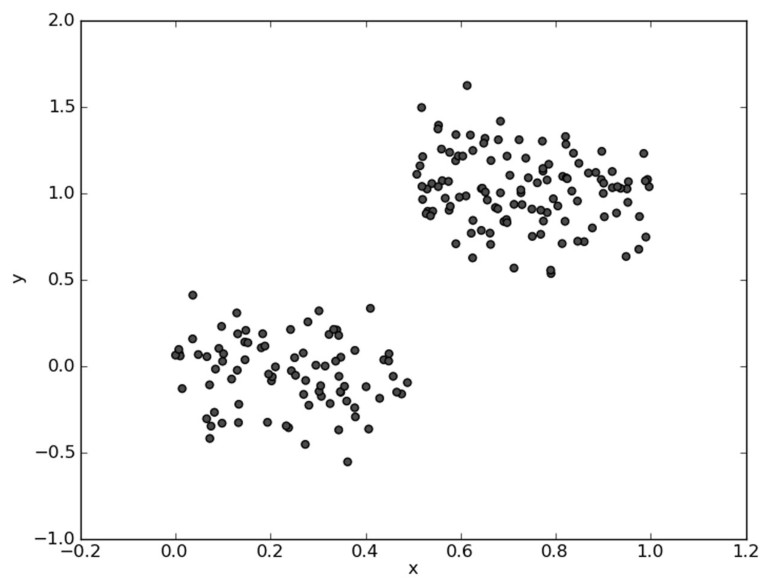
图 9-1 的数据存储在文件 ex00.txt 中。构建回归树：
>>> myDat = regTrees.loadDataSet('ex00.txt')
>>> myMat = mat(myDat)
>>> regTrees.createTree(myMat)
{'spInd': 0, 'spVal': 0.48813, 'left': 1.0180967672413792, 'right': -0.04465028571428572}
（实跑输出；书中的对应输出是 {'spInd': 0, 'spVal': matrix([[ 0.48813]]), 'right': -0.044650285714285733, 'left': 1.018096767241379}——切分阈值与两侧叶值和书一致，spVal 带不带 matrix 外壳来自 set 迭代矩阵的写法，个别末位差一两个数字是浮点求和路径的噪声（如书 1.018096767241379 vs 本笔记 1.0180967672413792），见 9.3.1 的适配说明。）
这棵树只有一个切分：特征 0 在 0.48813 处一刀切开，大于该值的点（y 约 1.02 附近）进左叶，其余进右叶（y 约 -0.04）——正好把两个数据簇分开。下图是这棵树的分段常数预测线（代码实跑）：
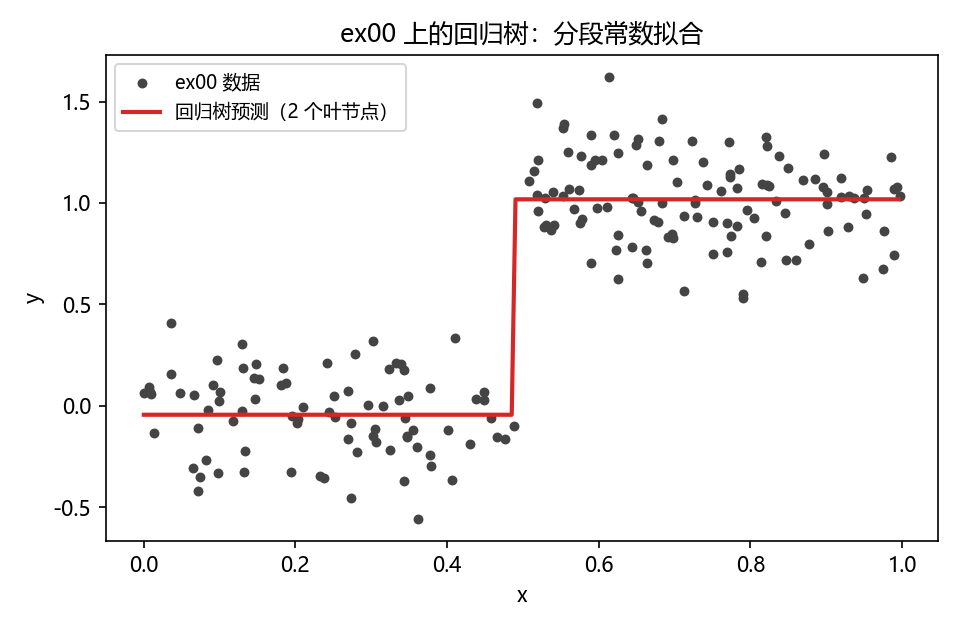
再看一个多次切分的例子，参见图 9-3 的数据集。
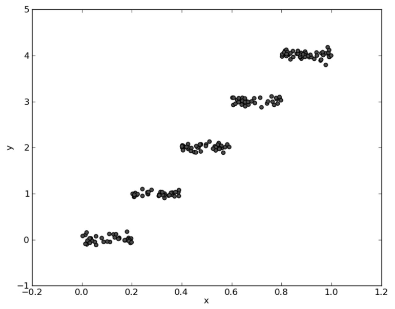
图 9-3 的数据保存在 tab 分隔的文本文档 ex0.txt 中（注意该文件有 3 列：第 0 列是恒为 1 的偏置列，第 1 列才是真正的特征 x1，最后一列是 y）。为从上述数据中构建一棵回归树，敲入如下命令：
>>> myDat1 = regTrees.loadDataSet('ex0.txt')
>>> myMat1 = mat(myDat1)
>>> regTrees.createTree(myMat1)
{'spInd': 1, 'spVal': 0.39435,
'left': {'spInd': 1, 'spVal': 0.582002,
'left': {'spInd': 1, 'spVal': 0.797583,
'left': 3.9871632, 'right': 2.9836209534883724},
'right': 1.980035071428571},
'right': {'spInd': 1, 'spVal': 0.197834,
'left': 1.0289583666666666, 'right': -0.023838155555555553}}
（实跑输出；换行是为了阅读，实际输出为一行。4 个切分阈值 0.39435 / 0.582002 / 0.797583 / 0.197834 与原书完全一致，个别叶值末位有浮点噪声（如原书 3.9871632000000004 vs 本笔记 3.9871632）。可以检查一下该树的结构：4 个切分节点、5 个叶节点——书里特意让读者确认这一点。另注意所有 spInd 都是 1：第 0 列恒为 1 没有切分价值，算法自己发现了。）
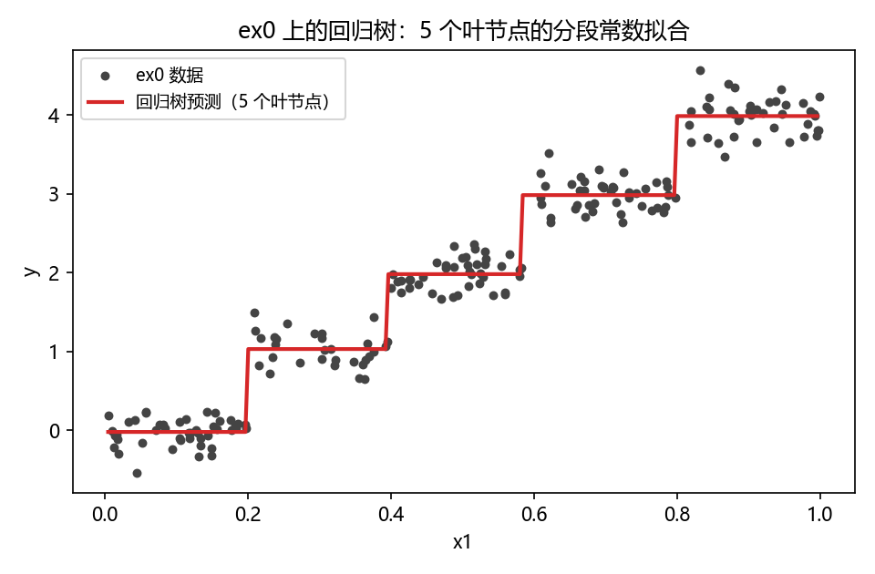
到现在为止，回归树的构建已经完成，但需要某种措施来检查构建过程是否得当。下面介绍树剪枝（tree pruning）技术，它通过对决策树剪枝来达到更好的预测效果。
9.4 树剪枝#
一棵树如果节点过多，表明该模型可能对数据进行了"过拟合"。如何判断是否发生了过拟合？前面章节使用了测试集上某种交叉验证技术来发现过拟合，决策树亦是如此。
通过降低决策树的复杂度来避免过拟合的过程称为剪枝（pruning）。其实本章前面已经进行过剪枝处理：chooseBestSplit() 中的提前终止条件，实际上是在进行一种所谓的预剪枝（prepruning）操作。另一种形式的剪枝需要使用测试集和训练集，称作后剪枝（postpruning）。本节将分析后剪枝的有效性，但首先来看一下预剪枝的不足之处。
9.4.1 预剪枝#
上节两个简单实验的结果还是令人满意的，但背后存在一些问题：树构建算法其实对输入的参数 tolS 和 tolN 非常敏感，如果使用其他值将不太容易达到这么好的效果。为了说明这一点，把 tolS、tolN 放开到最松（tolS=0、tolN=1），在 ex00 上构建树：
与上节中只包含两个节点的树相比，这里构建的树过于臃肿，它甚至为数据集中每个样本都分配了一个叶节点——ex00 有 200 个样本，实跑恰好 200 个叶节点。
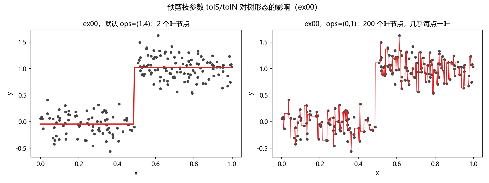
再看误差量级的影响。图 9-6 中的散点图看上去与图 9-1 非常相似，但仔细观察 y 轴就会发现：前者的数量级是后者的 100 倍。
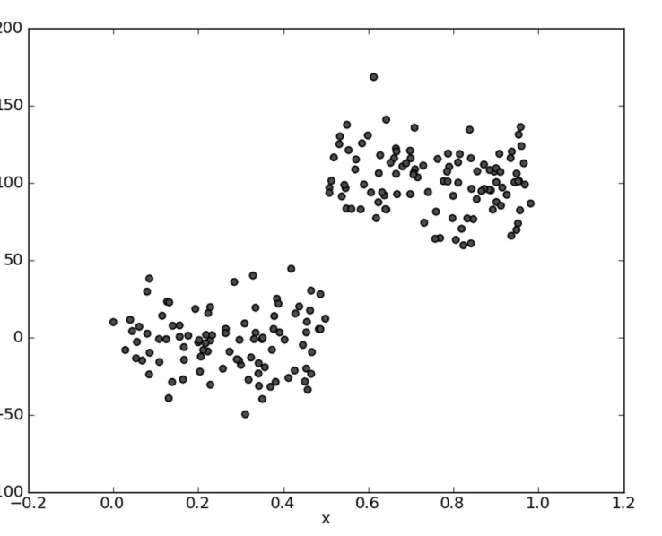
用该数据（存放在 ex2.txt 中）构建一棵新的树：
>>> myDat2 = regTrees.loadDataSet('ex2.txt')
>>> myMat2 = mat(myDat2)
>>> regTrees.createTree(myMat2)
（输出为一棵大树；实跑统计：叶节点数 = 42）
不知你注意到没有：从图 9-1 数据集构建出来的树只有两个叶节点，而这里构建的新树则有很多叶节点（实跑 42 个）。产生这个现象的原因在于，停止条件 tolS 对误差的数量级十分敏感——y 放大 100 倍后，动辄上百的误差下降轻松越过 tolS=1 这道门槛，于是树不停地切。如果在选项中花费时间并对上述误差容忍度取平方值（放大到 10000），或许也能得到仅有两个叶节点组成的树：
>>> regTrees.createTree(myMat2, ops=(10000, 4))
{'spInd': 0, 'spVal': 0.499171, 'left': 101.35815937735848, 'right': -2.637719329787234}
（实跑输出，两个叶节点；原书输出 {'spInd': 0, 'spVal': matrix([[ 0.499171]]), 'right': -2.6377193297872341, 'left': 101.35815937735855}——切分阈值与两叶值一致，左叶末位有浮点噪声（书 101.35815937735855 vs 本笔记 101.35815937735848）。）
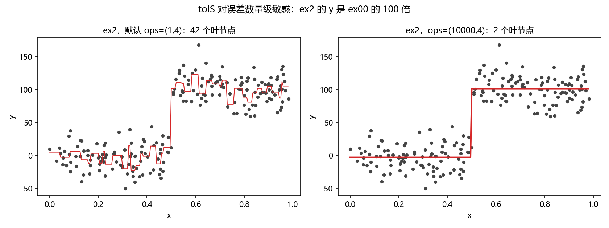
然而，通过不断修改停止条件来得到合理结果并不是很好的办法。事实上，我们常常甚至不确定到底需要寻找什么样的结果——这正是机器学习所关注的内容，计算机应该可以给出总体的概貌。下节将讨论后剪枝，即利用测试集来对树进行剪枝。由于不需要用户指定参数，后剪枝是一个更理想化的剪枝方法。
拓展：tolS 为什么对量级敏感，实际怎么选
tolS 是绝对量：它直接和数据误差的数值比大小，而误差随 y 的单位、缩放线性变化——把 y 从"米"换成"厘米"，同样的树会立刻膨胀。实践中可以先把 y 的量级摸清（比如用 \(\max(y)-\min(y)\) 的 1% 量级去设 tolS），或者干脆把 tolS 设 0、tolN 设大一点，再交给后剪枝收拾。sklearn 的 min_impurity_decrease 同样是绝对量，选参时也要考虑标签的量纲。
9.4.2 后剪枝#
使用后剪枝方法需要将数据集分成测试集和训练集。首先指定参数，使得构建出的树足够大、足够复杂，便于剪枝；接下来自上而下找到叶节点，用测试集来判断将这些叶节点合并是否能降低测试误差。如果合并后误差更低就合并。函数 prune() 的伪代码如下：
打开 regTrees.py 并输入程序清单 9-3 的代码：
# ===== 书 9.4.2 节 程序清单9-3（回归树剪枝函数）=====
def isTree(obj): # 判断节点是不是子树（字典）——即非叶节点
return (type(obj).__name__ == 'dict')
def getMean(tree): # 递归塌陷树：自顶向下遍历到叶，返回左右两叶的均值
if isTree(tree['right']): tree['right'] = getMean(tree['right'])
if isTree(tree['left']): tree['left'] = getMean(tree['left'])
return (tree['left'] + tree['right']) / 2.0
def prune(tree, testData): # 后剪枝：用测试集判断叶节点能否合并；会原地修改树
if shape(testData)[0] == 0: return getMean(tree) # 测试集为空 → 塌陷处理
if (isTree(tree['right']) or isTree(tree['left'])):
lSet, rSet = binSplitDataSet(testData, tree['spInd'], tree['spVal'])
if isTree(tree['left']): tree['left'] = prune(tree['left'], lSet)
if isTree(tree['right']): tree['right'] = prune(tree['right'], rSet)
# 左右都已是叶 → 尝试合并：比较合并前后的测试误差
if not isTree(tree['left']) and not isTree(tree['right']):
lSet, rSet = binSplitDataSet(testData, tree['spInd'], tree['spVal'])
errorNoMerge = sum(power(lSet[:, -1] - tree['left'], 2)) + \
sum(power(rSet[:, -1] - tree['right'], 2))
treeMean = (tree['left'] + tree['right']) / 2.0
errorMerge = sum(power(testData[:, -1] - treeMean, 2))
if errorMerge < errorNoMerge:
print('merging') # Py3 适配：原书为 print "merging"
return treeMean
else: return tree
else: return tree
程序清单 9-3 包含三个函数。isTree() 用于测试输入变量是否是一棵树（返回布尔结果）——换句话说，判断当前处理的节点是否是叶节点。getMean() 是递归函数，从上往下遍历树直到叶节点为止，找到两个叶节点则计算它们的平均值；该函数对树进行塌陷处理（即返回树的平均值），在 prune() 中调用该函数时应明确这一点。prune() 是主函数，两个参数：待剪枝的树与剪枝所需的测试数据 testData。
prune() 首先确认测试集是否为空——为空则对树做塌陷处理并返回。因为树是由其他数据集（训练集）生成的，测试集上会有一些样本与原数据集样本的取值范围不同：一旦出现这种情况应当怎么办？数据发生过拟合应该剪枝吗？还是模型正确不需要任何剪枝？书中这里假设发生了过拟合，从而对树进行剪枝（塌陷）。接下来检查某个分支到底是子树还是节点：是子树就递归调用 prune() 对该子树剪枝；对左右两个分支完成剪枝后，再检查它们是否仍是子树——如果两个分支已经不是子树，就可以尝试合并：对合并前后的误差进行比较，合并后误差更小就合并，反之不合并直接返回。
来看实际效果。为了创建所有可能中最大的树，导入测试数据并执行剪枝：
>>> maxTree = regTrees.createTree(myMat2, ops=(0, 1))
>>> myDatTest = regTrees.loadDataSet('ex2test.txt')
>>> myMat2Test = mat(myDatTest)
>>> regTrees.prune(maxTree, myMat2Test)
实跑结果（叶节点统计函数 numLeaf 为笔记补充；完整控制台输出见图 9-8）：
>>> maxTree = createTree(myMat2, ops=(0, 1)) # 所有可能中最大的树
>>> numLeaf(maxTree) # 笔记补充的叶节点计数函数
200
>>> myDatTest = loadDataSet('ex2test.txt')
>>> myMat2Test = mat(myDatTest)
>>> prunedTree = prune(maxTree, myMat2Test) # 注意：prune 原地改写 maxTree
merging （共输出 44 次 merging）
{'spInd': 0, 'spVal': 0.499171,
'left': {'spInd': 0, 'spVal': 0.729397, ... 深处 {'spInd': 0, 'spVal': 0.960398,
'left': 112.386764, 'right': 123.559747} ...},
'right': {...}}
>>> numLeaf(prunedTree)
141
可以看到，大量的节点已经被剪枝掉了（200 叶剪到 141 叶；叶数下降比 44 次 merging 更多，是因为部分子树在测试集为空时走 getMean() 塌陷，一次塌陷合并多个叶），但没有像预期的那样剪枝成两部分，这说明后剪枝可能不如预剪枝有效。一般地，为了寻求最佳模型可以同时使用两种剪枝技术。剪枝后树里能找到与原书输出一致的片段（根切分 0.499171、叶 92.5239915、子节点 0.960398 下的 112.386764 与 123.559747）。
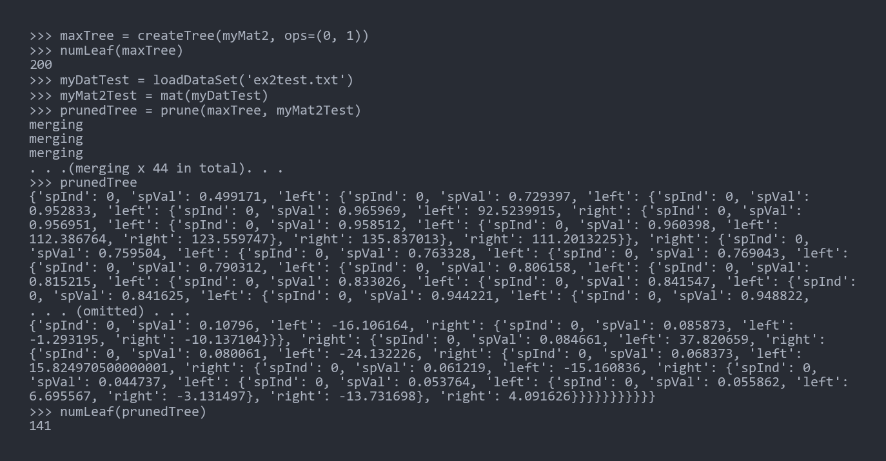
拓展：后剪枝的正式形态——代价复杂度剪枝
书里的后剪枝是"合并叶、看测试误差"的朴素版。CART 的正式后剪枝叫代价复杂度剪枝（cost-complexity pruning）：给叶节点个数乘一个惩罚系数 \(\alpha\)，从全量树里找一族子树，再用交叉验证选 \(\alpha\)。sklearn 的 DecisionTreeRegressor 暴露 ccp_alpha 参数直接可用。思想相同：用复杂度换偏差，让测试数据说了算。
下节将重用部分已有的树构建代码来创建一种新的树：仍采用二元切分，但叶节点不再是简单的数值，取而代之的是一些线性模型。
9.5 模型树#
用树来对数据建模，除了把叶节点简单地设定为常数值之外，还有一种方法是把叶节点设定为分段线性函数（piecewise linear），即模型由多个线性片段组成。考虑图 9-9 中的数据：用两条直线拟合是否比用一组常数建模好呢？答案显而易见——可以设计两条分别覆盖 0.0～0.3、0.3～1.0 的直线，得到两个线性模型。数据集的一部分（0.0～0.3）以某个线性模型建模，另一部分（0.3～1.0）以另一个线性模型建模，这就是所谓的分段线性模型。
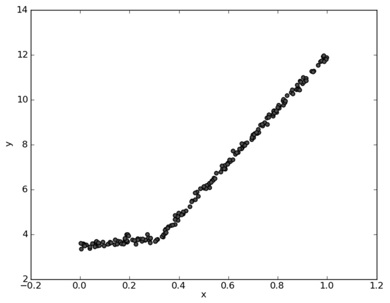
决策树相比于其他机器学习算法的优势之一在于结果更易理解。很显然，两条直线比很多节点组成的一棵大树更容易解释——模型树的可解释性是它优于回归树的特点之一。另外，模型树也具有更高的预测准确度。
前面的代码稍加修改就可以在叶节点生成线性模型而不是常数值：仍利用树生成算法对数据进行切分，且每份切分数据都能很容易被线性模型表示。该算法的关键在于误差的计算。回忆 createTree() 里 leafType 和 errType 两个从未改变过的参数——回归树把它们固定，此处略做修改，从而将前面的代码重用于模型树。
为了找到最佳切分，应该怎样计算误差呢？前面回归树的总方差在这里不能再用。稍加变化：对于给定的数据集，先用线性模型对它拟合，然后计算真实目标值与模型预测值间的差值，最后将这些差值的平方求和就得到了所需的误差。打开 regTrees.py 加入程序清单 9-4：
# ===== 书 9.5 节 程序清单9-4（模型树的叶节点生成函数）=====
def linearSolve(dataSet): # 把数据集格式化成 X、Y 并做标准线性回归（被下面两个函数调用）
m, n = shape(dataSet)
X = mat(ones((m, n))); Y = mat(ones((m, 1))) # X 第 0 列全 1（偏置项）
X[:, 1:n] = dataSet[:, 0:n-1]; Y = dataSet[:, -1] # 载入自变量与目标变量
xTx = X.T * X
if linalg.det(xTx) == 0.0: # 奇异矩阵：不可求逆，程序抛异常
raise NameError('This matrix is singular, cannot do inverse,\n\
try increasing the second value of ops')
ws = xTx.I * (X.T * Y) # 最小二乘解
return ws, X, Y
def modelLeaf(dataSet): # 生成叶节点：模型树的叶 = 线性回归系数 ws
ws, X, Y = linearSolve(dataSet)
return ws
def modelErr(dataSet): # 误差 = 真实值与线性模型预测值之差的平方和
ws, X, Y = linearSolve(dataSet)
yHat = X * ws
return sum(power(Y - yHat, 2))
模型误差的数学形式：
上述程序清单中的第一个函数是 linearSolve()，它会被其他两个函数调用，主要功能是将数据集格式化成目标变量 Y 和自变量 X——与第 8 章一样，X 和 Y 用于执行简单的线性回归（X 的第 0 列置 1 充当偏置项）。注意：如果矩阵的逆不存在也会造成程序异常，函数里用行列式是否为 0 检查并抛出 NameError，提示尝试增大 ops 的第二个值（tolN）。
第二个函数 modelLeaf() 与程序清单 9-2 里的 regLeaf() 类似：当数据不再需要切分时，它负责生成叶节点的模型——在数据集上调用 linearSolve() 并返回回归系数 ws。
最后一个函数 modelErr() 与 regErr() 类似，会被 chooseBestSplit() 调用来找最佳切分：在数据集上调用 linearSolve()，之后返回 yHat 和 Y 之间的平方误差。
至此，使用程序清单 9-1 和程序清单 9-2 中的函数构建模型树的全部代码已经完成。图 9-9 的数据已保存在 tab 分隔的文本文件 exp2.txt 里。为了调用 createTree() 和模型树的函数，需将模型树函数作为 createTree() 的参数：
>>> myMat2 = mat(regTrees.loadDataSet('exp2.txt'))
>>> regTrees.createTree(myMat2, regTrees.modelLeaf, regTrees.modelErr, (1, 10))
{'spInd': 0, 'spVal': 0.285477,
'left': matrix([[ 1.69855694e-03],
[ 1.19647739e+01]]),
'right': matrix([[ 3.46877936],
[ 1.18521743]])}
（实跑输出，与原书输出一致。两个叶节点都是 2×1 的系数矩阵：第 0 行是截距、第 1 行是斜率——即两条直线方程 y = 3.4688 + 1.1852x 和 y = 0.0017 + 11.9648x。）
可以看到，该代码以 0.285477 为界创建了两个模型，而图 9-9 的数据实际在 0.3 处分段。生成的两个线性模型分别是 \(y = 3.468 + 1.1852x\) 和 \(y = 0.0017 + 11.965x\)，与用于生成该数据的真实模型 \(y = 3.5 + 1.0x\) 和 \(y = 0 + 12x\)（再加高斯噪声）非常接近。
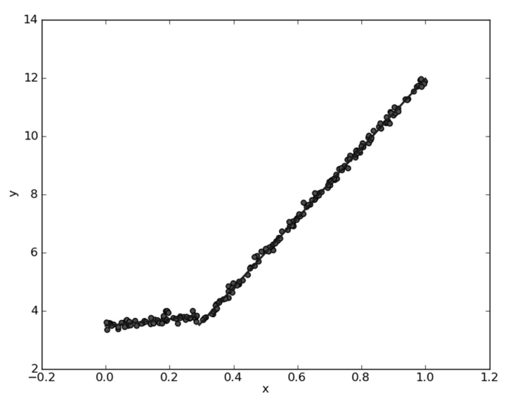
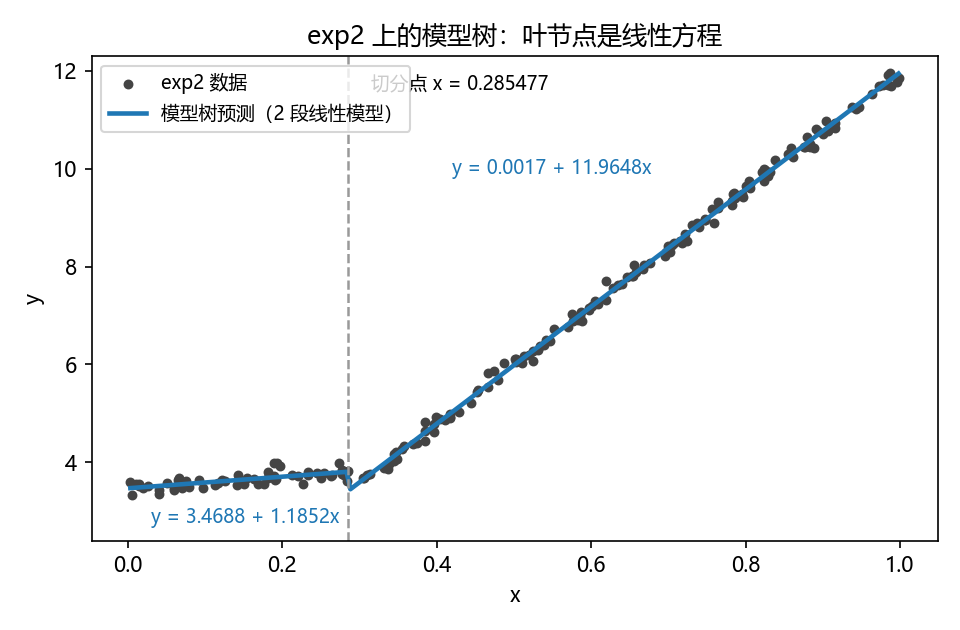
原书排印：第一个方程丢了 x
原书正文写"这两个线性模型分别是 y=3.468+1.1852 和 y=0.001 6985+11.964 77x"——第一个方程末尾漏了自变量 x，应为 \(y = 3.468 + 1.1852x\)（与叶系数矩阵 \([[3.46877936],[1.18521743]]\) 对应）。
拓展：模型树的家族背景
"叶节点放线性回归"的树最早由 Quinlan 在 M5 系统中系统化（M5 model tree），思想与 CART 一脉相承：切分准则换成"拟合后残差"。它与样条（spline）的差别在于：样条的切分点/基函数由连续优化确定，模型树的切分点由贪心搜索确定，但换来的是"每个叶子一条可读的方程"——这正是它可解释性优势的来源。对分段线性有明显结构的数据（本例、工业传感器曲线等），模型树通常用更少的叶达到更高精度。
模型树、回归树以及第 8 章里的其他模型，哪一种更好呢？一个比较客观的方法是计算相关系数，也称为 \(R^2\) 值——下面就来比。
9.6 示例：树回归与标准回归的比较#
前面介绍了模型树、回归树和一般的回归方法，下面测试一下哪个模型最好。本节先给出几个函数：在树构建好的情况下对给定的输入进行预测；之后利用这些函数计算三种回归模型的测试误差。测试数据涉及人的智力水平和骑自行车的速度的关系——数据是非线性的，不能简单地使用第 8 章的全局线性模型建模（当然需要声明：此数据纯属虚构）。
打开 regTrees.py 加入程序清单 9-5：
# ===== 书 9.6 节 程序清单9-5（用树回归进行预测）=====
def regTreeEval(model, inDat): # 回归树叶节点求值：叶就是常数，直接返回
return float(model)
def modelTreeEval(model, inDat): # 模型树叶节点求值：补第 0 列 1，算线性模型输出
n = shape(inDat)[1]
X = mat(ones((1, n + 1)))
X[:, 1:n+1] = inDat
return float(X * model)
def treeForeCast(tree, inData, modelEval=regTreeEval):
if not isTree(tree): return modelEval(tree, inData) # 命中叶节点 → 求值
if inData[tree['spInd']] > tree['spVal']: # 大于阈值走左子树
if isTree(tree['left']):
return treeForeCast(tree['left'], inData, modelEval)
else:
return modelEval(tree['left'], inData)
else: # 否则走右子树
if isTree(tree['right']):
return treeForeCast(tree['right'], inData, modelEval)
else:
return modelEval(tree['right'], inData)
def createForeCast(tree, testData, modelEval=regTreeEval):
# 对整个测试集逐行调用 treeForeCast，以列向量形式返回一组预测值
m = len(testData)
yHat = mat(zeros((m, 1)))
for i in range(m):
yHat[i, 0] = treeForeCast(tree, mat(testData[i]), modelEval)
return yHat
对于输入的单个数据点或者行向量，treeForeCast() 会返回一个浮点值。调用时需要指定树的类型，以便在叶节点上调用合适的模型——参数 modelEval 是对叶节点数据进行预测的函数的引用，默认 regTreeEval()。treeForeCast() 自顶向下遍历整棵树直到命中叶节点，然后调用 modelEval()。要对回归树叶节点进行预测就调用 regTreeEval()，对模型树节点进行预测就调用 modelTreeEval()：两者都会对输入做格式化处理——在原数据矩阵上增加第 0 列 1，再计算并返回预测值。为了与 modelTreeEval() 保持一致，regTreeEval() 虽然只用一个输入，但仍保留了两个输入参数。最后一个函数 createForeCast()（注意书里就这样拼写，大写 C，不是笔误）多次调用 treeForeCast()，以向量形式返回一组预测值，在对整个测试集预测时非常有用。
treeForeCast 的取下标方式是个暗坑
inData[tree['spInd']] 对矩阵按行取：单特征数据传 \(1 \times 1\) 矩阵（spInd=0）没问题；但若传入 \(1 \times n\) 的行向量且 spInd≥1，会直接 IndexError。原书用法是把测试点按"列向量的一行"传进来的（testMat[:,0] 的每一行恰是 \(1\times1\)），所以只对 spInd=0 的数据天然可用。对 ex0 这类 spInd=1 的数据做整树预测，测试点要构造成列向量 \([[1.0],[x]]\) 再传入（本笔记的实跑图正是这样画的）。
接下来考虑图 9-12 所示的数据——骑自行车的速度和人的智商之间的关系。基于该数据集建立多个模型，并在另一个测试集上测试：训练集在 bikeSpeedVsIq_train.txt，测试集在 bikeSpeedVsIq_test.txt。
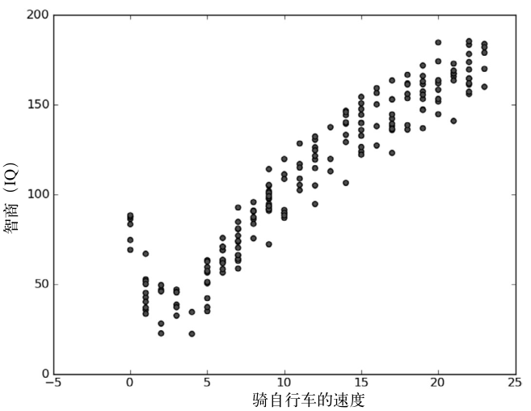
下面为该数据构建三个模型。先创建一棵回归树，再创建一棵模型树：
>>> trainMat = mat(regTrees.loadDataSet('bikeSpeedVsIq_train.txt'))
>>> testMat = mat(regTrees.loadDataSet('bikeSpeedVsIq_test.txt'))
>>> myTree = regTrees.createTree(trainMat, ops=(1, 20))
>>> yHat = regTrees.createForeCast(myTree, testMat[:, 0])
>>> corrcoef(yHat, testMat[:, 1], rowvar=0)[0, 1]
0.964085231822215
>>> myTree = regTrees.createTree(trainMat, regTrees.modelLeaf,
... regTrees.modelErr, (1, 20))
>>> yHat = regTrees.createForeCast(myTree, testMat[:, 0],
... regTrees.modelTreeEval)
>>> corrcoef(yHat, testMat[:, 1], rowvar=0)[0, 1]
0.9760412191380619
（实跑输出；原书对应 0.96408523182221306 与 0.9760412191380623——一致，仅末位浮点噪声。两棵树的叶节点数实跑均为 7。）
我们知道，\(R^2\) 值越接近 1.0 越好，所以模型树的结果比回归树好。再看看标准的线性回归效果如何——无须导入第 8 章的任何代码，本章已实现过一个线性方程求解函数 linearSolve()：
为了得到测试集上所有的 yHat 预测值，在测试数据上循环执行：
>>> for i in range(shape(testMat)[0]):
... yHat[i] = testMat[i, 0] * ws[1, 0] + ws[0, 0]
>>> corrcoef(yHat, testMat[:, 1], rowvar=0)[0, 1]
0.9434684235674767
可以看到，标准线性回归在 \(R^2\) 上的表现不如上面两种树回归方法（实跑 0.9434684235674767，原书 0.94346842356747584）。所以，树回归方法在预测复杂数据时会比简单的线性模型更有效。
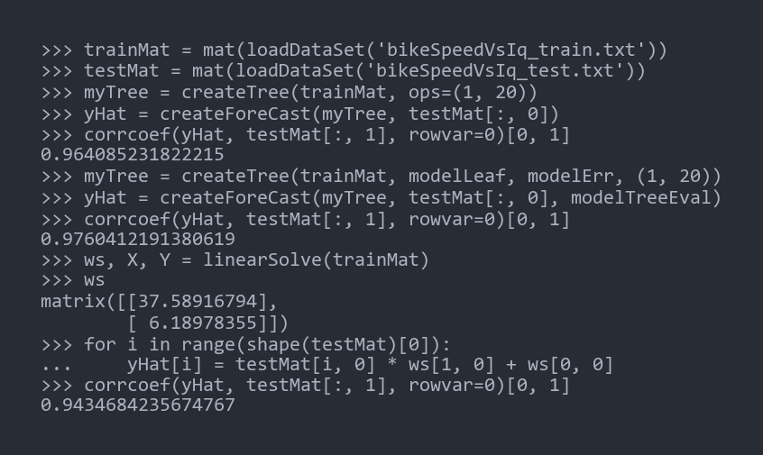
三者的预测曲线放在一起看更直观：回归树是阶梯状的分段常数，模型树是折线状的分段线性，标准线性回归是一条全局直线。
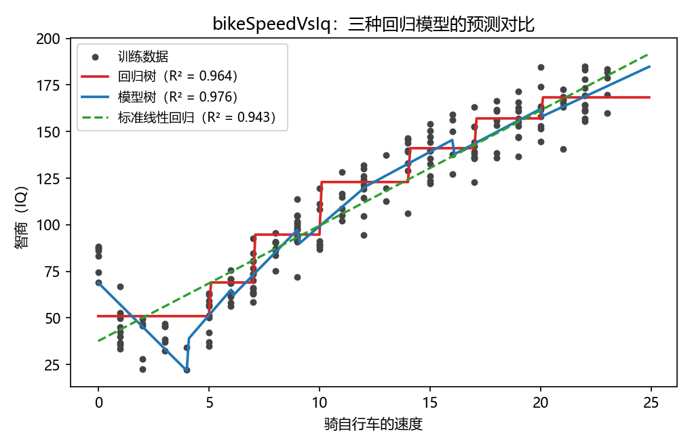
模型树叶节点里的方程也值得读一读（实跑，ops=(1,20)，7 个叶）：根节点按速度 4.0 切开，慢速侧（速度 ≤ 4）拟合出 IQ = 68.87 − 11.79×速度——速度越快智商越低，正是这批虚构数据的"梗"；快速侧继续细分成 6 片，斜率在 +5～+13 之间。这就是模型树可解释性的直观展示：每个叶一条方程，谁在哪个区间、涨多快一目了然。
{'spInd': 0, 'spVal': 4.0,
'left': {'spInd': 0, 'spVal': 12.0, # 速度 > 4 一侧
'left': {'spInd': 0, 'spVal': 16.0,
'left': {'spInd': 0, 'spVal': 20.0,
'left': matrix([[47.58621512], [ 5.51066299]]),
'right': matrix([[37.54851927], [ 6.23298637]])},
'right': matrix([[43.41251481], [ 6.37966738]])},
'right': {'spInd': 0, 'spVal': 9.0,
'left': matrix([[-2.87684083], [10.20804482]]),
'right': {'spInd': 0, 'spVal': 6.0,
'left': matrix([[-11.84548851], [ 12.12382261]]),
'right': matrix([[-17.21714265], [ 13.72153115]])}}},
'right': matrix([[ 68.87014372], # 速度 ≤ 4 一侧
[-11.78556471]])}
实跑提示：这套数据别用默认 ops
在 bikeSpeedVsIq_train.txt 上用默认 ops=(1, 4) 建模型树会直接抛 NameError：数据里速度是重复的整数，某个 4 样本的叶子全为同一速度值，\(X^{\top}X\) 行列式为 0（奇异）。报错信息本身给出了药方——"try increasing the second value of ops"——把 tolN 提到 20 即可（回归树同样建议 (1, 20)，与原书命令一致）。
拓展：书里的 R² 其实是相关系数 r
书中把 corrcoef() 的结果称为 \(R^2\) 值，严格说 corrcoef(yHat, y) 算出的是 Pearson 相关系数 \(r \in [-1, 1]\)（这里取到正数，越接近 1 代表预测值与真值越近似线性一致）；统计里的判定系数 \(R^2 = 1 - \mathrm{SSE}/\mathrm{SST} \in [0, 1]\) 是另一个量。对一元线性回归恰好有 \(R^2 = r^2\)，两者数值相近但不相同。书里"越接近 1 越好"的结论不受影响，知道这层区别即可。
拓展：CART 回归树在现代工具箱里的位置
本章手写的 CART 回归树正是现代梯度提升框架的基学习器：GBDT、XGBoost、LightGBM 的每一棵树都是"总方差最小化"的二元回归树，sklearn 的 DecisionTreeRegressor(criterion='squared_error') 与本章的 chooseBestSplit 同源。区别在于工程化：sklearn 默认 min_samples_split=2、min_samples_leaf=1（相当于 tolN 极小），预剪枝参数（max_depth、min_samples_leaf、min_impurity_decrease）与后剪枝（ccp_alpha）齐备，且切分点搜索做了大量加速。理解了本章，这些参数就都不再是黑盒。
9.7 使用Python的Tkinter库创建GUI#
机器学习提供了强大的工具，能从未知数据中抽取有用信息，因此能否将这些信息以易于人们理解的方式呈现十分重要。假如人们可以直接与算法和数据交互，解释就会轻松很多——如果仅仅绘制一幅静态图像，或只在命令行输出一些数字，对结果做分析和交流将非常困难。能让用户不需要任何指令就按自己的方式来分析数据的方式之一，就是构建一个图形用户界面（GUI，Graphical User Interface）。
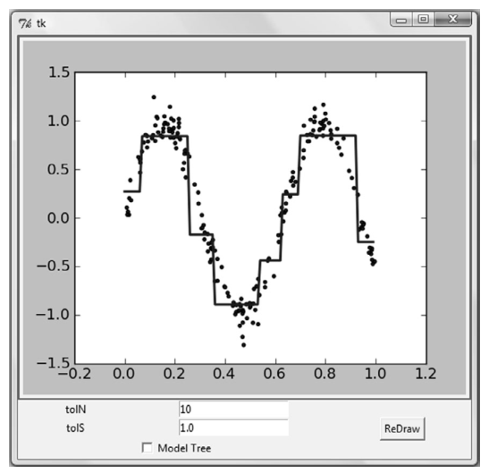
示例：利用 GUI 对回归树调优的一般方法：
| 步骤 | 做法 |
|---|---|
| (1) 收集数据 | 所提供的文本文件 |
| (2) 准备数据 | 用 Python 解析上述文件，得到数值型数据 |
| (3) 分析数据 | 用 Tkinter 构建 GUI 来展示模型和数据 |
| (4) 训练算法 | 训练一棵回归树和一棵模型树，并与数据集一起展示出来 |
| (5) 测试算法 | 这里不需要测试过程 |
| (6) 使用算法 | GUI 使得人们可以在预剪枝时测试不同参数的影响，还可以帮助选择模型的类型 |
接下来先介绍如何利用 Tkinter 构建 GUI，再介绍 Tkinter 与绘图库之间的交互，最后创建一个能让人们自己探索模型树和回归树的 GUI。
运行环境说明（9.7 节）
Tkinter 代码需要弹出窗口并与用户交互，不实跑、不截图（GUI 窗口无法进笔记）；界面效果用原书图 9-15、9-16、9-17 呈现并注明。代码忠实呈现原书逻辑，并改写为 Python 3 可直接运行。
9.7.1 用 Tkinter 创建 GUI#
Python 有很多 GUI 框架，其中易于使用的 Tkinter 随 Python 的标准编译版本发布，可以在 Windows、Mac OS 和大多数 Linux 平台上使用。
先从最简单的 Hello World 例子开始：
# ===== 书 9.7.1 节 Tkinter Hello World（Python 3 版）=====
from tkinter import * # Py3 适配：模块名 Tkinter → tkinter
root = Tk() # 创建 Tk 根部件：这时会出现一个小窗口
myLabel = Label(root, text="Hello World") # 创建一个标签小部件
myLabel.grid() # 交给布局管理器：默认放在 0 行 0 列
root.mainloop() # 启动事件循环：窗口开始响应鼠标、按键、重绘
执行后会出现一个小窗口；想在小部件上显示文字，构造 Label 时传 text 即可。最后一句 mainloop() 启动事件循环，使窗口可以在众多事件中响应鼠标点击、按键和重绘等动作。
Tkinter 的 GUI 由一些小部件（Widget）组成：文本框（Text Box）、按钮（Button）、标签（Label）、复选按钮（Check Button）等对象都是小部件。Hello World 里的标签 myLabel 是其中唯一的小部件。调用 myLabel 的 grid() 方法时，就等于把 myLabel 的位置告诉了布局管理器（Geometry Manager）：.grid() 把小部件安排在一个二维表格中，用户可以设定每个小部件所在的行列位置；没有设定时，myLabel 默认显示在 0 行 0 列。此外还可以设定 columnspan 和 rowspan，告诉布局管理器允许一个小部件跨行或跨列。
下面把所需的小部件集成在一起构建树管理器。建立新文件 treeExplore.py，加入程序清单 9-6 的小部件代码（原书以图片给出；这里按官方源码补全为可运行形态，绘图区先用占位标签，绘图函数 reDraw/drawNewTree 留作存根，下一小节补全）：
# ===== 书 9.7.1 节 程序清单9-6（树管理器界面的 Tkinter 小部件，Python 3 版）=====
from numpy import *
try:
mat
except NameError:
mat = matrix
from tkinter import * # Py3：Tkinter → tkinter
import regTrees
def reDraw(tolS, tolN): # 存根：9.7.2 补全
pass
def drawNewTree(): # 存根：9.7.2 补全
pass
root = Tk()
# 绘图占位符：下一小节用 Matplotlib 画布替换（对应书图 9-16 的灰色区域）
Label(root, text="Plot Place Holder").grid(row=0, columnspan=3)
Label(root, text="tolN").grid(row=1, column=0)
tolNentry = Entry(root) # Entry：允许单行文本输入的文本框
tolNentry.grid(row=1, column=1)
tolNentry.insert(0, '10') # 预填默认值
Label(root, text="tolS").grid(row=2, column=0)
tolSentry = Entry(root)
tolSentry.grid(row=2, column=1)
tolSentry.insert(0, '1.0')
Button(root, text="ReDraw", command=drawNewTree).grid(row=1, column=2, rowspan=3)
chkBtnVar = IntVar() # 读取 Checkbutton 状态需要创建一个 IntVar 变量
chkBtn = Checkbutton(root, text="Model Tree", variable=chkBtnVar)
chkBtn.grid(row=3, column=0, columnspan=2)
reDraw.rawDat = mat(regTrees.loadDataSet('sine.txt')) # 与 reDraw() 关联的全局变量
reDraw.testDat = arange(min(reDraw.rawDat[:, 0]), max(reDraw.rawDat[:, 0]), 0.01)
程序清单 9-6 建立了一组 Tkinter 小部件，并用网格布局管理器安排位置。除前面见过的 Label/Button 外，还有几个新面孔：Entry 是允许单行文本输入的文本框；Checkbutton 和 IntVar 的功能显而易见——为了读取 Checkbutton 的状态需要创建一个变量，也就是 IntVar。代码还初始化了一些与 reDraw() 关联的全局变量（原始数据 rawDat 与均匀分布的测试点 testDat），后面会用到。书里没有给"退出"按钮：用户想退出可以点击右上角关闭整个窗口，额外加退出按钮有点多此一举；真想要的话，建一个 command 指向 root.quit 的 Button 即可。
保存执行，可以看到与图 9-16 类似的界面。
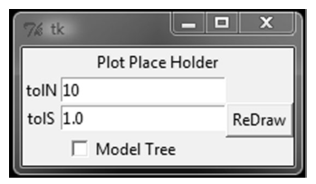
9.7.2 集成Matplotlib和Tkinter#
本书已经用 Matplotlib 绘制过很多图像，能否将这些图像直接放在 GUI 上？先介绍"后端"（backend）的概念：Matplotlib 的构建程序包含一个前端——面向用户的代码，如 plot() 和 scatter() 方法；同时它创建了一个后端，用于实现绘图和不同应用之间的接口。通过改变后端，可以将图像绘制在 PNG、PDF、SVG 等格式的文件上。这里将后端设置为 TkAgg（Agg 是一个 C++ 的库，可以从图像创建光栅图）：TkAgg 可以在所选 GUI 框架上调用 Agg，把 Agg 呈现在画布上。我们可以在 Tk 的 GUI 上放置一个画布，并用 grid() 来调整布局。
拓展：光栅图与矢量图
译者注原文：光栅图也称为位图、点阵图、像素图，按点阵保存图像，放大会有失真；与光栅图相对的是矢量图（向量图），放大不失真。Agg 生成的就是光栅图。Tkinter 场景之外，Matplotlib 常用后端还有 Qt5Agg、MacOSX，以及输出文件用的 Agg/SVG/PDF 等——本笔记里的实跑图就是用非交互的 Agg 后端落盘的。
先用画布替换绘制占位符（删掉占位标签），并把树创建函数与画布链接起来。下面给出合并清单 9-6 与 9-7 之后可直接运行的 treeExplore.py 完整 Python 3 版（原书提醒：之前实现过 reDraw() 和 drawNewTree() 的存根，确保同一个函数不要重复出现）：
# ===== 书 9.7 节 程序清单9-6 + 9-7（treeExplore.py 合并版，Python 3）=====
from numpy import *
try:
mat
except NameError:
mat = matrix
from tkinter import * # Py3 适配：Tkinter → tkinter
import regTrees
import matplotlib
matplotlib.use('TkAgg') # 设定后端：把图画到 Tk 的 GUI 上
from matplotlib.backends.backend_tkagg import FigureCanvasTkAgg
from matplotlib.figure import Figure
def reDraw(tolS, tolN):
reDraw.f.clf() # 清空之前的图像：前后两个图像不会重叠
reDraw.a = reDraw.f.add_subplot(111)
if chkBtnVar.get(): # 复选框被选中 → 构建模型树
if tolN < 2: tolN = 2
myTree = regTrees.createTree(reDraw.rawDat, regTrees.modelLeaf,
regTrees.modelErr, (tolS, tolN))
yHat = regTrees.createForeCast(myTree, reDraw.testDat,
regTrees.modelTreeEval)
else: # 未选中 → 构建回归树
myTree = regTrees.createTree(reDraw.rawDat, ops=(tolS, tolN))
yHat = regTrees.createForeCast(myTree, reDraw.testDat)
reDraw.a.scatter(reDraw.rawDat[:, 0], reDraw.rawDat[:, 1], s=5) # 真实值：离散点用 scatter
reDraw.a.plot(reDraw.testDat, yHat, linewidth=2.0) # 预测值：连续曲线用 plot
reDraw.canvas.draw() # Py3 适配：书为 canvas.show()，新版 Matplotlib 已移除，改用 draw()
def getInputs(): # 读取输入框的值并做表单验证，防止程序崩溃
try:
tolN = int(tolNentry.get()) # tolN 期望整数
except ValueError:
tolN = 10
print('enter Integer for tolN') # Py3 适配：print 改为函数
tolNentry.delete(0, END) # 清除错误的输入
tolNentry.insert(0, '10') # 用默认值替换
try:
tolS = float(tolSentry.get()) # tolS 期望浮点数
except ValueError:
tolS = 1.0
print('enter Float for tolS')
tolSentry.delete(0, END)
tolSentry.insert(0, '1.0')
return tolN, tolS
def drawNewTree(): # 点击 ReDraw 按钮时被调用
tolN, tolS = getInputs() # ① 得到输入框的值
reDraw(tolS, tolN) # ② 用该值重画树
root = Tk()
reDraw.f = Figure(figsize=(5, 4), dpi=100) # 创建画布（替换占位符）
reDraw.canvas = FigureCanvasTkAgg(reDraw.f, master=root)
reDraw.canvas.draw()
reDraw.canvas.get_tk_widget().grid(row=0, columnspan=3)
Label(root, text="tolN").grid(row=1, column=0)
tolNentry = Entry(root)
tolNentry.grid(row=1, column=1)
tolNentry.insert(0, '10')
Label(root, text="tolS").grid(row=2, column=0)
tolSentry = Entry(root)
tolSentry.grid(row=2, column=1)
tolSentry.insert(0, '1.0')
Button(root, text="ReDraw", command=drawNewTree).grid(row=1, column=2, rowspan=3)
chkBtnVar = IntVar()
chkBtn = Checkbutton(root, text="Model Tree", variable=chkBtnVar)
chkBtn.grid(row=3, column=0, columnspan=2)
reDraw.rawDat = mat(regTrees.loadDataSet('sine.txt'))
reDraw.testDat = arange(min(reDraw.rawDat[:, 0]), max(reDraw.rawDat[:, 0]), 0.01)
reDraw(1.0, 10) # 默认参数先画一幅（tolS=1.0, tolN=10）
root.mainloop() # 启动事件循环
Python 3 适配（GUI 代码）
三处必改：① 模块名 Tkinter → tkinter；② canvas.show() 在新版 Matplotlib 中已删除，改为 canvas.draw()（reDraw 末尾与画布创建后各一处）；③ print "..." → print(...)。若想在外部模块更新后重载，Py2 的 reload() 也要改为 importlib.reload()。
逐个介绍新函数。drawNewTree() 在有人点击 ReDraw 按钮时被调用，实现两个功能：调用 getInputs() 得到输入框的值；利用该值调用 reDraw() 生成一个漂亮的图。getInputs() 试图理解用户的输入并防止程序崩溃：tolN 期望整数、tolS 期望浮点数，通过在 Entry 部件上调用 .get() 方法取得文本；这里使用 try/except 模式——能把输入文本解析成整数就继续执行，不能识别则输出错误消息、清空输入框并恢复其默认值。表单验证会在 GUI 编程时花费大量时间，但对用户体验必不可少。reDraw() 的主要目的是把树绘制出来：它假定输入是合法的；先清空之前的图像（clf 会把各个子图也清除，所以要重新添加一个新图）；然后检查复选框是否被选中，根据选中与否基于 tolS 和 tolN 构建模型树或回归树；树构建完成后对测试集 testDat 进行预测（该测试集与训练集有相同的范围且点的分布均匀）；最后真实数据用 scatter() 绘制、预测值用 plot() 绘制——scatter() 构建离散散点图，plot() 构建连续曲线。
执行 treeExplore.py（命令行下 python treeExplore.py），应该可以看到与图 9-15 类似的结果：GUI 包含图 9-16 的所有小部件，占位符已被 Matplotlib 图替换，默认给出一棵包含八个叶节点的回归树。勾选 Model Tree 复选框再点击 ReDraw，可以看到模型树结果（图 9-17）——与回归树相比，模型树取得了更好的预测效果。
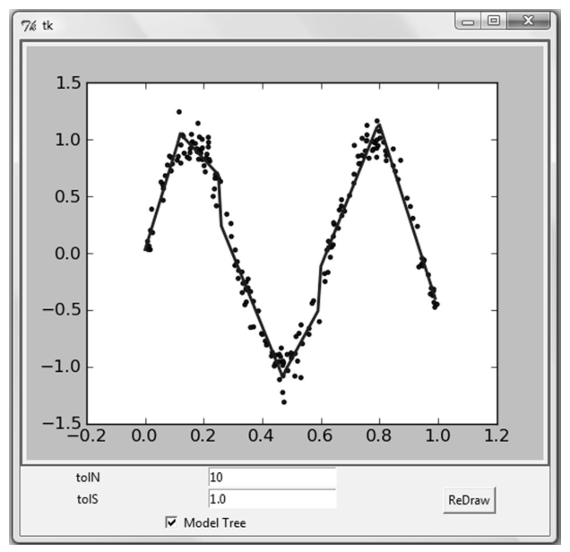
读者可以在 treeExplore 中尝试不同的参数值：整个数据集包含 200 个样本，可以把 tolN 设为 150 观察执行效果；为构建尽可能大的树，应当把 tolN 设为 1、tolS 设为 0——测试一下并观察执行的效果。
9.8 本章小结#
数据集中经常包含一些复杂的相互关系，使得输入数据和目标变量之间呈现非线性关系。对这些复杂关系建模，一种可行的方式是使用树来对预测值分段：包括分段常数或分段直线。若叶节点使用的模型是分段常数则称为回归树，若叶节点使用的模型是线性回归方程则称为模型树。
CART 算法可以用于构建二元树并处理离散型或连续型数据的切分。使用不同的误差准则，就可以通过 CART 算法构建模型树和回归树。该算法构建出的树会倾向于对数据过拟合，剪枝技术就是为解决这个问题而出现的：预剪枝（树的构建过程中就进行剪枝）和后剪枝（树构建完毕再进行剪枝）——预剪枝更有效但需要用户定义一些参数，实践中一般两种技术同时使用。
Tkinter 是 Python 的一个 GUI 工具包（虽不是唯一的，但最常用），可以轻松绘制各种部件并灵活安排它们的位置；为 Tkinter 构造一个特殊部件来显示 Matplotlib 的图，两者集成可以构建出更强大的 GUI，让用户以更自然的方式探索机器学习算法的奥妙。
本章是回归的最后一章。接下来离开监督学习的岛屿，驶向无监督学习的未知港湾：在回归和分类（监督学习）中，目标变量的值是已知的；无监督学习中上述条件将不再成立。下一章的主要内容是 K-均值聚类算法。
坑与陷阱#
8 个容易踩的坑
- binSplitDataSet 行尾多一个 [0]（原书勘误）：
nonzero(...)返回的已经是行下标，再取[0]就只剩 1 行——所有候选切分被continue掉，整棵树退化成单个叶节点。官方勘误表要求删除；作者官方仓库的 regTrees.py 也带着这个 bug。 - createTree 必须定义在 regLeaf/regErr/chooseBestSplit 之后：默认参数
leafType=regLeaf在 def 执行时求值，照书排版顺序先写 createTree 会直接 NameError。组装文件时让切分函数在前（官方源码的顺序）。 - Py3 的 map() 返回迭代器：loadDataSet 里
map(float, curLine)不加 list() 的话，append 进去的是 map 对象，后面 mat() 直接报错。 from numpy import *会遮蔽内建函数：np.min/np.max/np.sum/np.copy 覆盖内建 min/max/sum/copy——本笔记实跑时min(44, 3)、copy.deepcopy先后因此翻车。要混用内建与 numpy，要么import numpy as np用全名，要么在星号导入前把内建存起来（_min = min）。- createTree 吃的是 NumPy 矩阵不是 list：loadDataSet 返回的列表必须先
mat()包一层，否则dataSet[:,feature]的元组下标直接 TypeError。 - treeForeCast 按"行"取特征：
inData[spInd]对 \(1\times n\) 行向量在 spInd≥1 时越界报 IndexError。原书只在单特征（spInd=0）或列向量场景使用；ex0 这类数据预测要传列向量 \([[1.0],[x]]\)。 - set() 直接迭代矩阵会得到 1×1 矩阵：新版 numpy 下
set(dataSet[:,featIndex])里的元素是矩阵，树里的 spVal 会显示成matrix([[ 0.48813]])（原书截图正是这样）。先.T.tolist()[0]展平更干净。 - 模型树叶太小 → 奇异矩阵异常：叶子样本太少或特征取值全相同时 \(X^{\top}X\) 不可逆，linearSolve 抛 NameError。按报错提示增大 tolN（bike 数据用 (1, 20)；GUI 里也有
if tolN < 2: tolN = 2的兜底）。
速览#
- CART（分类回归树）用二元切分构建树：特征值大于阈值走左子树，否则走右子树；可处理连续型特征，标称型需映射成二值型。
- 树存成字典，四键固定：spInd（切分特征）、spVal（切分阈值）、left、right（子树或叶值）；Python 用字典即可，无须自定义类。
- createTree(dataSet, leafType, errType, ops) 是分类/回归共用的骨架：回归树传 regLeaf/regErr，模型树传 modelLeaf/modelErr。
- 回归树叶 = 目标变量均值（分段常数）；误差 = 总方差 = 均方差 × 样本数；chooseBestSplit 有三个退出条件（值全相同 / 误差下降 < tolS / 子集 < tolN），后两条即预剪枝。
- 预剪枝参数非常敏感：ex00 上 ops=(0,1) 得 200 叶（每点一叶）；ex2 的 y 放大 100 倍后默认参数切出 42 叶，tolS 提到 10000 才回到 2 叶。
- 后剪枝 prune() 用测试集自顶向下尝试合并叶：ex2 最大树（200 叶）经 44 次 merging 剪到 141 叶；测试集为空的子树会被 getMean() 塌陷。后剪枝可能不如预剪枝有效，一般两种技术同时使用。
- 模型树叶 = 线性方程 ws（分段线性）：误差 = 线性拟合后的平方误差和；可解释性更好、预测准确度更高。
- exp2 实跑：0.285477 处切分（真实分段在 0.3），两段模型 y=3.4688+1.1852x 与 y=0.0017+11.9648x，贴近真实生成模型 y=3.5+1.0x 与 y=0+12x。
- bikeSpeedVsIq 三模型测试集 R²（ops=(1,20)，实跑与书一致）：模型树 0.976 > 回归树 0.964 > 标准线性回归 0.943——复杂数据上树回归优于全局线性模型。
- Tkinter（Py3 模块名 tkinter）+ Matplotlib 后端 TkAgg 可以把树模型画进 GUI：tolN/tolS 输入框 + Model Tree 复选框 + ReDraw 按钮，交互式预剪枝调参与选型；Py3 下记得 canvas.show() → canvas.draw()。
术语速查#
| 英文 / 函数 | 中文 | 一句话 |
|---|---|---|
| CART (Classification And Regression Trees) | 分类回归树 | 用二元切分构建树，既可分类又可回归 |
| regression tree | 回归树 | 叶节点是单个常数（目标变量均值），预测呈分段常数 |
| model tree | 模型树 | 叶节点是线性方程，预测呈分段线性 |
| piecewise linear | 分段线性 | 模型由多个线性片段组成 |
| binary splitting | 二元切分 | 每次把数据集切成两份：大于阈值进左子树，否则进右子树 |
| ID3 | —— | 第 3 章的分类树算法：按特征全部取值切分，不能直接处理连续特征 |
| pruning | 剪枝 | 降低决策树复杂度以避免过拟合 |
| prepruning | 预剪枝 | 树构建中的提前终止（tolS/tolN），需用户指定参数 |
| postpruning | 后剪枝 | 树建好后用测试集自顶向下合并叶，无须用户参数 |
| tolS | 容许的误差下降值 | 切分带来的误差下降小于它就不切（ops[0]） |
| tolN | 切分的最少样本数 | 切分后任一子集样本数不能小于它（ops[1]） |
| total squared error | 总方差 | 均方差 × 样本数，回归树的切分误差准则 |
| spInd / spVal | 切分特征 / 切分特征值 | 树字典里记录"按哪个特征、按什么阈值切" |
| leafType / errType / ops | 叶模型 / 误差函数 / 参数元组 | createTree 的三个可调参数，决定树的类型 |
| collapse | 塌陷处理 | getMean() 把子树收敛成左右叶的均值 |
| corrcoef | 相关系数 | NumPy 命令 corrcoef(yHat, y, rowvar=0)，书称为 R² 值 |
| treeForeCast / createForeCast | 单点预测 / 整集预测 | 自顶向下走到叶，按 modelEval 求值 |
| regTreeEval / modelTreeEval | 回归树叶求值 / 模型树叶求值 | 前者直接返回常数，后者补第 0 列 1 后算 \(X \cdot ws\) |
| linearSolve | 线性方程求解 | 格式化 X（第 0 列置 1）、Y 并做最小二乘，det=0 抛 NameError |
| Tkinter | —— | 随 Python 标准版发布的 GUI 工具包（Py3 模块名 tkinter） |
| Widget | 小部件 | 文本框、按钮、标签、复选按钮等界面元素 |
| grid() / Geometry Manager | 网格布局 / 布局管理器 | 把小部件安排进二维表格，可设行列、columnspan/rowspan |
| Entry / Checkbutton / IntVar | 单行输入框 / 复选按钮 / 整型变量 | 树管理器的输入部件；IntVar 用于读取复选框状态 |
| backend (TkAgg / Agg) | 后端 | Matplotlib 实现绘图与应用接口的层；TkAgg 在 Tk 上调用 C++ 库 Agg |
| raster image | 光栅图 | 位图/点阵图，放大失真（与矢量图相对，译者注） |